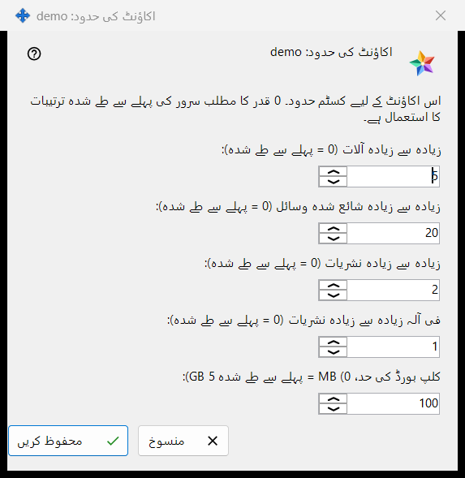
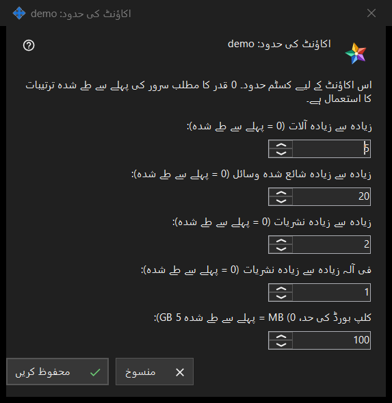

اکاؤنٹ کی حدود
یہ کس مقصد کے لیے ہے
آپ کے چلائے ہوئے Media Exchange Server کے ایک اکاؤنٹ کی انفرادی حدود طے کرتا ہے؛ 0 چھوڑی گئی قدر سرور کی طے شدہ قدر کی پیروی کرتی ہے۔ یہ Share Manager کی ترتیبات کے Media Exchange Server صفحے پر اکاؤنٹس کی فہرست کے نیچے کے حدود.. بٹن سے کھلتی ہے، جو اکاؤنٹ منتخب کرنے پر نظر آتا ہے۔ عنوان میں اکاؤنٹ کا نام ہوتا ہے: اکاؤنٹ کی حدود: <لاگ ان>۔


اس ترتیب میں
- اکاؤنٹ منتخب کریں اور حدود.. دبائیں۔
- جس حد کو بدلنا ہو اس کے لیے عدد ڈالیں، اور سرور کی طے شدہ قدر کے لیے 0 چھوڑ دیں۔
- محفوظ کریں دبائیں۔
- نتیجے کی سطر پڑھیں: اکاؤنٹ <لاگ ان> کی حدود محفوظ ہو گئیں۔
عناصر
آلات اور وسائل
زیادہ سے زیادہ آلات (0 = پہلے سے طے شدہ) طے کرتا ہے کہ اکاؤنٹ میں کتنے آلات سائن اِن ہو سکتے ہیں۔ زیادہ سے زیادہ شائع شدہ وسائل (0 = پہلے سے طے شدہ) طے کرتا ہے کہ اکاؤنٹ سرور پر کتنے مشترکہ فولڈر اور دوسرے وسائل شائع کر سکتا ہے۔
نشریات
زیادہ سے زیادہ نشریات (0 = پہلے سے طے شدہ) پورے اکاؤنٹ کی نشریات کی حد طے کرتا ہے، اور فی آلہ زیادہ سے زیادہ نشریات (0 = پہلے سے طے شدہ) طے کرتا ہے کہ اس کا ایک آلہ کتنی شروع کر سکتا ہے۔
کلپ بورڈ کی حد
کلپ بورڈ کی حد، MB (0 = پہلے سے طے شدہ 5 GB) وہ سب سے بڑی قدر طے کرتی ہے جو اکاؤنٹ سرور پر اپنے کلپ بورڈ میں بھیج سکتا ہے، پورے میگا بائٹ میں۔ چھوٹی اکائیوں میں محفوظ حد، مثلاً 512 KB، 0 دکھائی دیتی ہے اور جب تک آپ اس خانے کو نہ چھیڑیں اپنی عین مقدار برقرار رکھتی ہے۔
محفوظ کریں اور منسوخ کریں
محفوظ کریں اکاؤنٹ کی اپنی حدود کو ایک ساتھ بدل دیتا ہے: 0 سے بڑا ہر عدد حد بن جاتا ہے، ہر 0 کا مطلب سرور کی طے شدہ قدر ہے، اور پانچ صفر اکاؤنٹ کی اپنی تمام قدریں ہٹا دیتے ہیں۔ منسوخ کچھ نہیں بدلتا۔ اگر سرور کوئی قدر مسترد کرے تو نتیجے کی سطر وجہ بتاتی ہے، مثلاً: حد کی اجازت نہیں ہے: یہ سرور کی طرف سے قبول کی جانے والی حد کے اندر ایک مکمل عدد ہونا چاہیے۔
مینیجر کی ترتیبات · SFTP اشتراک کی ترتیبات · ایکسچینج سرور کی ترتیبات